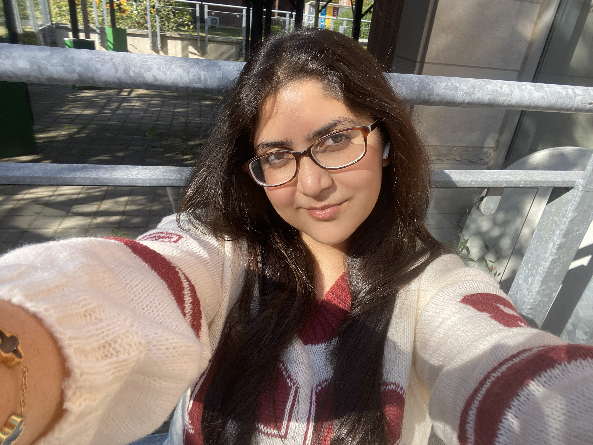

I am Sophia, a first-year Computer Science student at McMaster University. I would say that my curiosity
around coding started early on, well, if you count the Scratch games. Although somewhere between block coding
and building full-stack apps, it stopped being a ‘hobby’ or ‘after-school activity’ and started feeling like a
career path.
These days, I am studying the fundamentals properly: systems, data structures, the ‘unglamorous’ stuff that
makes everything else work. What genuinely excites me about programming varies greatly, from full-stack web
applications and UX design to how companies are starting to integrate machine learning into everyday software
engineering workflows, not as AI as a product, but as a tool. I am also pulled towards cybersecurity for the
opposite reason, it’s less focused on creating and more thinking like someone who wants to break what you
built.
I have a creative background in multimedia design for around three years, which gave me a natural eye
for how things should feel, not just function. A skill shown through nearly any project I make, ensuring a
positive and aesthetic user experience on the applications I create.
Outside of the terminal, I love reading, mostly fantasy and classics. Some of my favourites include,
The Poppy War by R.F. Kuang, Notes from the Underground by Fydor Dostoevsky, and Six of Crows by Leigh Bardugo.
I also enjoy a good cup of coffee, going on the ocassional marvel binge watch, making hundereds of spotify playlists, and playing RPGs.